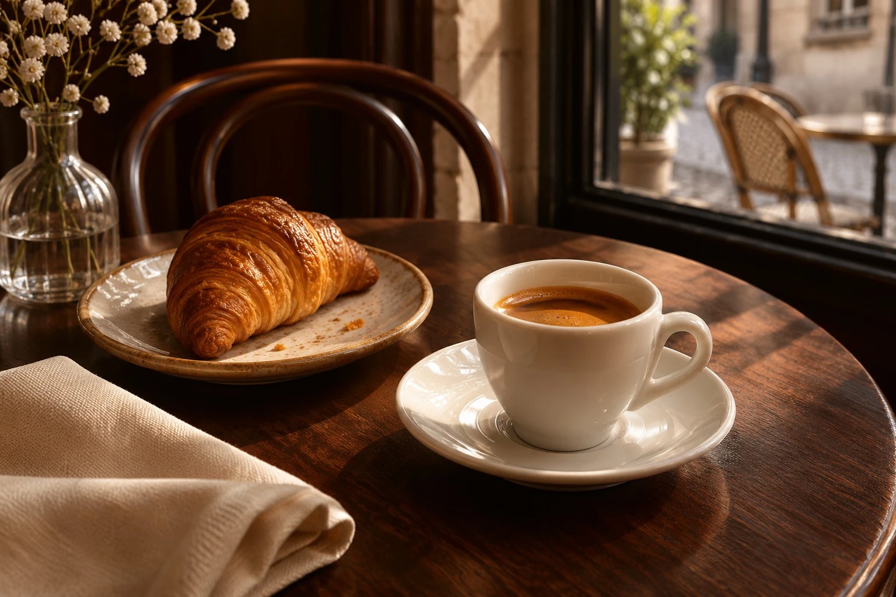
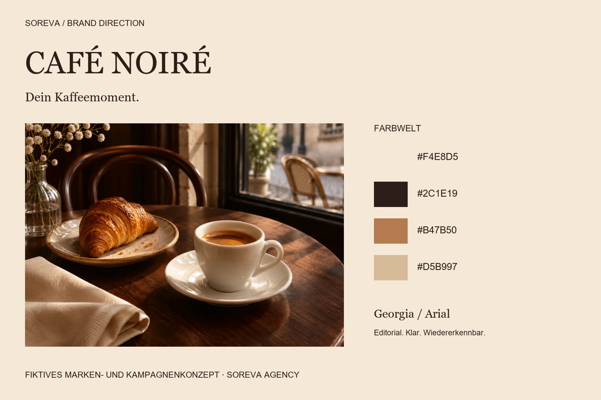
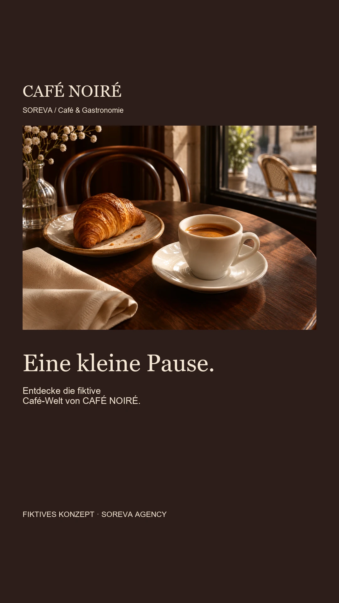
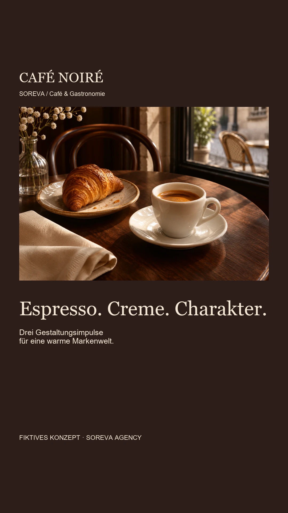
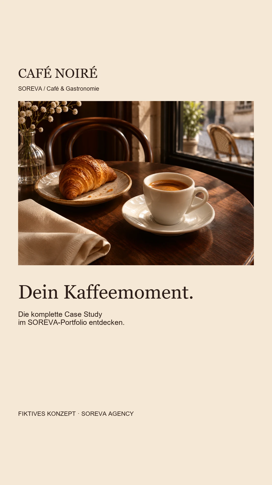

Café & Gastronomie / Markenidentität & Social Media
CAFÉ NOIRÉ
Eine Café-Identität mit Wärme und Charakter.
Fiktive, selbstinitiierte Konzeptarbeit von SOREVA Agency. Kein Kundenauftrag. KI-generierte Bildmotive; keine real erhältlichen Produkte oder Angebote.

01 / Ausgangspunkt
Eine Idee mit Richtung.
Wie lässt sich die Atmosphäre eines fiktiven Cafés digital erzählen, ohne erfundene Öffnungszeiten, Ortsangaben oder Angebote als reale Informationen auszugeben?
Gestalterisches Ziel: ein konsistenter Auftritt von der Markenwelt bis zu den digitalen Kontaktpunkten.
Gedachte Zielgruppe: Menschen, die Café-Besuche als kleine Pause im Alltag erleben. Der konzeptionelle Auftritt soll Nähe vermitteln und sich auch in einem schnellen Feed-Moment erschließen. Diese Einordnung ist eine konzeptionelle Annahme.
02 / Kreative Leitidee
Your coffee moment
„Your coffee moment“ macht die Pause zum Mittelpunkt. Tiefe Espressotöne, warme Food-Motive und ein prägnanter Wortmarkenauftritt übersetzen Café-Atmosphäre in wiederverwendbare Formate.
Umfang: Markenrichtung, typografische Wortmarke, Farb- und Typografiesystem, fotografische Bildrichtung, drei Feed-Posts, drei Story-Seiten und Website-Präsentation.
03 / Markenidentität
Farbe. Schrift. Atmosphäre.
Eine eigenständige visuelle Welt mit wiederkehrenden Gestaltungsprinzipien. Die Wortmarke und Headlines nutzen Georgia, erklärende Texte Arial.

04 / Gestaltungsentscheidungen
Ein System, das zusammenpasst.
- Eine kräftige Serifentypografie schafft Charakter. Kurze Sätze und klare Informationsblöcke halten den Auftritt zugänglich.
- Espressobraun bildet die Grundfläche, Creme schafft Kontrast. Karamell erscheint als Akzent und nicht als Farbe für kleinen Text.
- Die Kampagne zeigt Stimmung statt Verkaufsangebote. Ohne reales Café gibt es keine Adresse, Reservierung oder behauptete Herkunft der Zutaten.
05 / Social Media
Wiedererkennung im Alltag.
Der Feed führt vom Markenauftakt über die Gestaltungsprinzipien zum Kampagnenmoment. Die Story übersetzt dieselbe Idee in eine kurze Sequenz. Jedes Motiv trägt einen sichtbaren Konzepthinweis.
Instagram-Feed


Dreiteilige Story






06 / Website-Gestaltungsrichtung
Deine Pause
hat einen Platz.
Die konzeptionelle Café-Welt von CAFÉ NOIRÉ: warme Töne, vertraute Formen und Raum für einen Kaffeemoment.
Ergebnis der Gestaltung
Entstanden ist ein zusammenhängendes Designsystem mit plattformgerechten Social-Media-Motiven, Brandboard und Website-Präsentation. Das Konzept zeigt die gestalterische Herangehensweise von SOREVA.
Es wurde keine reale Kampagne ausgespielt. Reichweite, Umsatz und Conversion wurden nicht erhoben. Die Motive sind keine Produktdokumentation; ein funktionsfähiger Shop und reale Geschäftsangebote sind nicht Bestandteil der Arbeit.
DEINE MARKE / DEIN NÄCHSTER SCHRITT
Eine eigene Markenwelt entwickeln?
Erzähl uns von deinem Vorhaben. Gemeinsam klären wir, welche Gestaltung und Unterstützung zu deiner Marke passen.
Projekt unverbindlich anfragen →